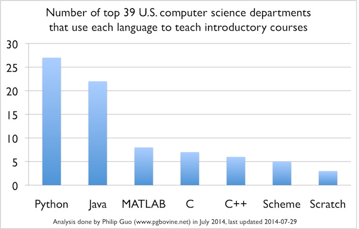

A sampling of indices gauging computer programming language popularity (e.g. PYPL and TIOBE) shows that Java, after 20 years, still enjoys a huge following. In general, depending upon whom and/or when you ask, Java usually comes in first or second place in these surveys. Although it might be hard to imagine recent computer science graduates without Java exposure, one trend is evident: top universities are gravitating towards teaching "simpler" languages in lieu of Java for their introductory programming classes.
The standard Java platform, compared to its counterparts like
Python, currently lacks a Read-Eval-Print-Loop otherwise
known as a REPL. Instead of having to construct and
compile complete syntactically correct programs before feedback
can be achieved, REPLs allow much more interactivity, enabling the
student/programmer to enter small snippets of code and receive
immediate feedback. According to the Java Enhancement
Proposal which outlines the new jshell functionality, "The
number one reason schools cite for moving away from Java as a
teaching language is that other languages have a "REPL" and have
far lower bars to an initial "Hello,
world!" program." With the introduction of jshell
in the upcoming Java 9 release, this shortcoming will be
eliminated.
Falling under the auspices of an OpenJDK project called Kulla, the
code representing the REPL capability has yet to be incorporated
into the core JDK 9 early access
release. As of the writing of this article (late July
2015), a separate build is required to get the jshell
functionality. In the (hopefully not-too-distant) future an
early access release will bundle all these features together
obviating the need for extra work. In the interim, here's a
brief video demonstrating some of it's features.
As we near the "feature complete" phase for JDK 9, we look forward to better integration and incorporation of yet more new important features into this upcoming release.